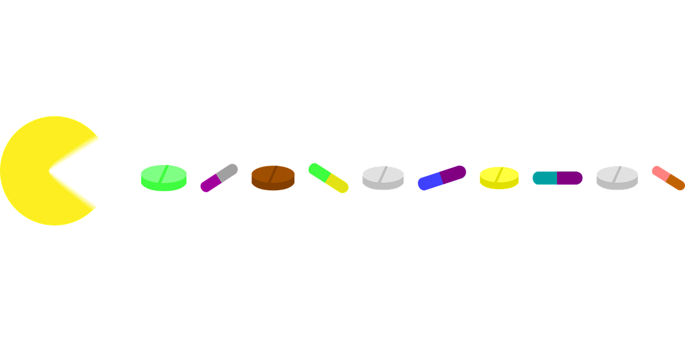

Auf dieser Internetseite schreiben wir über das Suchtpotenzial von Videospielen und wie stark Viedeospiele uns als Suchtmittel beeinflussen. Wenn man das Wort "Suchtmittel" hört denkt man wahrscheinlich erst an Drogen und an andere stärkere Abhängig machende Mittel. Die ersten Konsumprodukte wären dann Kokain oder Cannabis oder auch Alkohol, aber an Videospiele denkt man in diesem Zusammenhang eher nicht, da das Suchtpotenzail nicht so stark ausgereift ist wie bei anderen oben genannten Suchtmitteln. Jedoch können Videospiele ein hohes Suchtpotenzial aufweisen, da man viele Glücksmomente erlebt, während man sie spielt. Welche Harmone dabei wichtig sind und wie sie auf uns wirken erfahren sie auf dieser Internetseite.
Bei dem Spielen von Videospielen kommen verschidene Hormone zum einsatz. Dabei spielen Adrenalin in spannenden Momenten, Dopamin und Serotonin eine wichtige Rolle, da wenn sie ausgeschüttet werden entstehen Glücksgefühle, die uns antreiben und uns ansporen weiter zu spielen.
Videospiele können ganz unterschiedlich auf uns wirken. Die Wirkung hängt meistns von den Spielen ab, die man spielt. Eine Studie von AOK hat ergeben, das nach acht Wochen durchgehend Videospiele spielen das Gehirn und viele Teile davon sich vergrößert haben. Dabei hat sich besonders der Hippocampus vergrößert, der für räumliche Navigation und für die Gedächtnisbildung entscheiden ist. Neben den Hippocampus hat sich zudem auch der präfrontale Cortex vergrößert. Man kann zu dieser Studie auf jedenfall sagen, dass das Videospielen auch gute Wirkungen haben kann auf den menschlichen Körper, obwohl es sehr schnell abhängig machen kann. Zudem hat man ein frölicheres und glücklicheres Leben, da viele Glückshormone ausgeschüttet werden. Durch mehr Spass wurden die Hirnregionen noch größer. Die Studie zeigt keine langwierenden schlechten Folgen. Durch das Spielen werden auch die motorischen Fähigkeiten gestärkt, also die Feinmotorik. Es gibt aber auch negative Folgen von Videospiele. Zudem gehören die schnell süchtigmachenden Glückspiele. Sie locken einen an mit großen Gewinnen und halten dich fest mit den immerwiederkehrenden Gewinn von so kleinen Summen, das sie nur eine kleine Summe des ausgegebenen Budgets nur ersetzen. Damit entstehen auch psysische Probleme, da die Spieler das Geld eher verlieren als es wiederzugewinnen. Auch die Aggresivität wird bei sogennanten "Killer- oder Ballerspielen" gesteigert, da man ein hohes aggresives Verhalten entwickelt durch die Blutflecken und verstörenden Todeszenen. Bei Videospielen kann man schnell mal Raum und Zeit vergessen, sodass man viel zu lange pro Tag spielt und die familiärischen und freundschaftlichen Beziehungen geschadet werden oder das man sein Schlafrythmus gefärdet, indem man zu lange Wach bleibt. Trotzdem denken wir, dass Videospiele keine schlechten Mittel sind um zum Beispiel in einer Psychatrie die Insasen zu beruhigen und zu entspannen. Zudem kommt hinzu, dass die positiven Wirkungen auf den Körper weit überlegen sind zu den Negativen. Man sollte jedoch eine Sperre oder ein Zeitabschnitt auch mit anderen Dingen verbringen, dass die Beziehungen zwischen Freunden nicht verletzt werden und man nicht zu viel an Videospiele hängt, dass man Zeit und Raum vergisst.
Videospiele sind eine beliebte Freizeitbeschäftigung für Menschen jeden Alters, aber es gibt Bedenken hinsichtlich ihrer Auswirkungen auf die Gesundheit. Einige dieser Auswirkungen sind kurzfristiger Natur, während andere langfristiger Natur sind.
Kurzfristige Auswirkungen von Videospielen auf die Gesundheit umfassen Augenbelastung, Rückenschmerzen und Schulterschmerzen aufgrund von unbequemer Sitzposition und unzureichender Bewegung. Es kann auch zu Konzentrationsschwierigkeiten und Schlafstörungen führen, wenn die Spiele längere Zeit gespielt werden.
Langfristige Auswirkungen von Videospielen auf die Gesundheit sind jedoch weit weniger bekannt, aber es gibt Studien, die darauf hindeuten, dass sie eine Rolle bei der Entstehung von Adipositas, Depressionen und Angststörungen spielen können. Dies kann auf die Tatsache zurückzuführen sein, dass Menschen, die viel Zeit mit Videospielen verbringen, weniger Zeit damit verbringen, sich körperlich zu betätigen und sich gesund zu ernähren.
Es ist wichtig zu betonen, dass diese Auswirkungen nicht bei jedem Spieler gleich sind und dass es auch positive Auswirkungen von Videospielen auf die Gesundheit gibt, wie z.B. die Verbesserung der Hand-Augen-Koordination und die Steigerung von Problemlösungsfähigkeiten. Um die negativen Auswirkungen von Videospielen auf die Gesundheit zu minimieren, empfiehlt es sich, regelmäßig Pausen einzulegen, um die Augen zu entspannen und sich zu bewegen. Es ist auch wichtig, eine ausgewogene Ernährung und genug Schlaf zu haben.
Insgesamt kann man sagen, dass Videospiele sowohl kurzfristige als auch langfristige Auswirkungen auf die Gesundheit haben können, aber durch die Beachtung von bestimmten Vorsichtsmaßnahmen und die Einhaltung eines gesunden Lebensstils kann man diese Auswirkungen minimieren.

Videospiele sind eine beliebte Freizeitbeschäftigung und eine Form der Unterhaltung, die von Menschen jeden Alters genossen wird. Während das Spielen von Videospielen in Maßen viele Vorteile haben kann, wie zum Beispiel die Verbesserung der Hand-Augen-Koordination und die Steigerung von Problemlösungsfähigkeiten, kann es auch zu einer Abhängigkeit führen.
Eine Abhängigkeit von Videospielen tritt auf, wenn eine Person so sehr von dem Spielen von Videospielen besessen ist, dass es ihr tägliches Leben beeinträchtigt. Dies kann sich auf die Schule, die Arbeit, die Beziehungen und die allgemeine Gesundheit auswirken. Menschen, die von einer Abhängigkeit betroffen sind, können Schwierigkeiten haben, das Spielen von Videospielen einzuschränken oder aufzuhören, und können sogar weiterhin spielen, obwohl sie wissen, dass es ihnen schadet.
Die Gründe für eine Abhängigkeit von Videospielen sind vielfältig und können von Person zu Person unterschiedlich sein. Einige Menschen können abhängig werden, weil das Spielen von Videospielen ihnen ein Gefühl von Macht und Kontrolle gibt, während andere es als eine Möglichkeit sehen, Stress abzubauen oder ihre Probleme zu verdrängen. Es gibt auch Faktoren wie die Verfügbarkeit von Online-Spielen, die es ermöglichen, dass man jederzeit und überall spielen kann, sowie die Verfügbarkeit von In-Game-Käufen und die Möglichkeit, gegen andere Spieler zu konkurrieren, die die Abhängigkeit fördern können.
Um eine Abhängigkeit von Videospielen zu vermeiden, ist es wichtig, eine ausgewogene Lebensweise zu führen und regelmäßig Pausen einzulegen, um sich zu entspannen und sich zu bewegen. Es ist auch wichtig, sich über die Auswirkungen des Spielens von Videospielen im Klaren zu sein und sich bewusst zu sein, wann es Zeit ist aufzuhören. Wenn man das Gefühl hat, dass das Spielen von Videospielen ein Problem darstellt und das eigene Leben beeinträcht
Es ist wohl keine Frage, dass betroffene etwas gegen eine Videospielsucht machen müssen. Die frage ist nur, was dafür die Möglichkeiten sind. Die Antwort darauf wäre z.B. ein Aufenthalt in einer psychatrischen Einrichtung, in welcher auf einen geachtet wird. Eine weitere Möglichkeit wäre der selbstständige Entzug von derartigen digitalen Medien.
sacc
Abb. 1: wdapfc (besucht am 1.2.2023